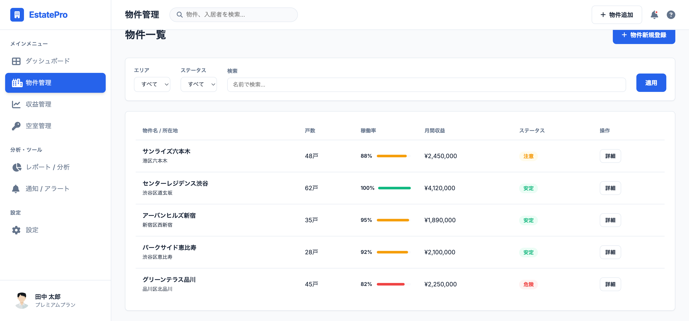
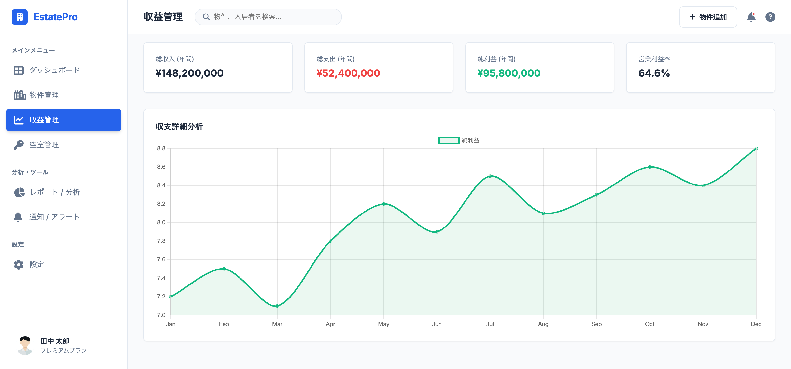
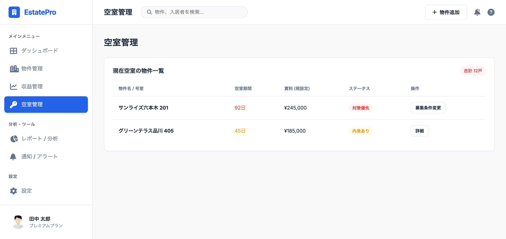
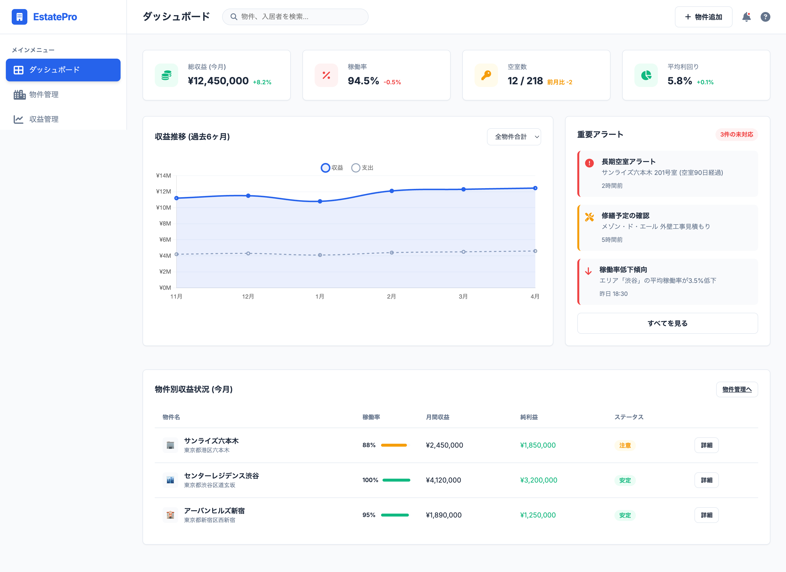

概要
不動産管理SaaSのUIデザインプロジェクトです。情報量が多い画面においても、ユーザーが直感的に操作できるよう余白と色使いを整理しました。
課題と解決策
不動産オーナーは複数の物件を保有することが多く、管理業務や収支把握に「情報の分散」「判断の遅れ」「空室リスクの見逃し」といった課題がありました。
そこで、ダッシュボードを中心とした情報設計により、
収益・稼働率・リスクを一画面で把握できるようになり、
意思決定までの時間を大幅に短縮できるようになりました。
また、空室や収益低下を視覚的に把握できるUI設計により、
対応スピードの向上と空室率の改善に貢献できるようになりました。
その結果、管理工数の削減、収益性の向上、運用効率の最適化を実現することができました。
デザイン面での改善
01
情報の可視化
Before
- Excel・紙で分散管理
- 数字が羅列されているだけ
- 全体像が把握できない
After
- KPIカード＋グラフで視覚化
- 一画面で状況把握可能
- 重要情報を優先表示
改善ポイント
「理解にかかる時間」を削減
02
情報設計（IA）の最適化
Before
- 情報が散在
- どこを見ればいいか分からない
- 操作導線が不明確
After
- ダッシュボード中心設計
- サイドバーで構造を明確化
- ページごとの役割を整理
改善ポイント
迷わないナビゲーション設計
03
意思決定を促すUI
Before
- 判断材料が整理されていない
- リスクに気づきにくい
After
- 色分け（赤＝空室リスク）
- アラート表示
- 優先度が視覚的に分かる
改善ポイント
「考えるUI」から「気づくUI」へ
04
データの優先順位設計
Before
- 全て同じ重要度で表示
- 何が重要か分からない
After
- KPI → グラフ → 詳細 の順で配置
- 上から見れば理解できる構造
改善ポイント
情報の階層設計（ヒエラルキー）
05
操作性（UX）の向上
Before
- 操作が複雑
- 画面遷移が多い
After
- 一画面完結型ダッシュボード
- タブ・フィルターで完結
- 少ないクリックで操作可能
改善ポイント
操作負荷の削減